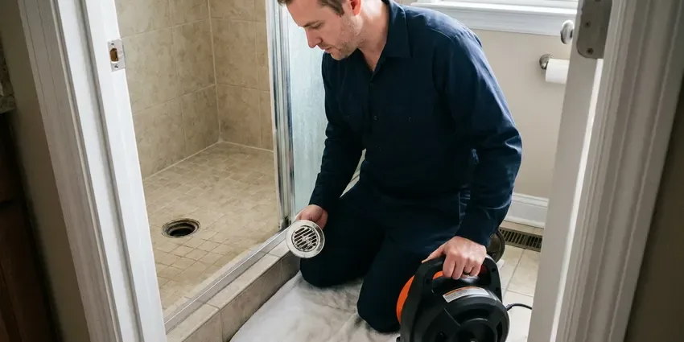
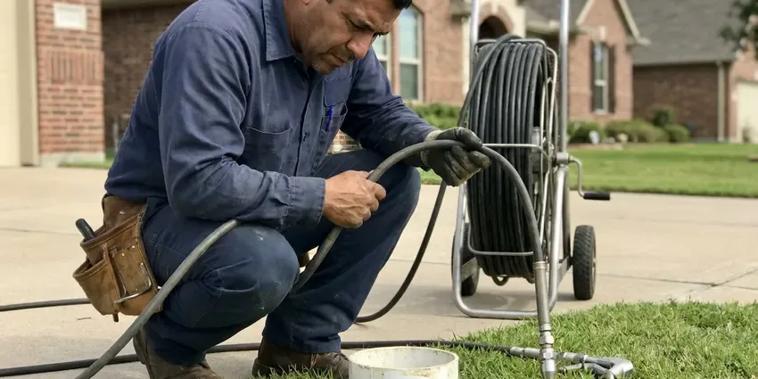

Drain Unblocking in Sumter, SC
For reliable drain unblocking across Sumter, SC, trust the experienced plumbers at KBN Plumbing. We clear even the toughest blockages.
- Expert Local Plumbers
- Satisfaction Guaranteed
- Clear Pricing
- Fast Response Times

Blocked Drain Ruining Your Day? We Can Clear It Quickly in Sumter, SC.
We remove the blockage, test the fixture and leave the area tidy.
Reliable Drain Unblocking Services in Sumter, SC
KBN Plumbing understands the frustration of a blocked drain, which is why we offer fast and reliable drain unblocking services in Sumter, SC. We make sure your plumbing is clear and running smoothly again.
Our expertise includes:
- Locating whether the block is fixture, branch or main
- Specialized tools for all drain sizes
- Toilet pulls to retrieve toys, phones and solid objects

Additional Drain Services Services in Sumter, SC
From stubborn kitchen clogs to main sewer backups, our drain services in Sumter, SC restore full flow fast and keep it that way.


Local drain cleaning by KBN Plumbing, Sumter


Local hydro jetting by KBN Plumbing, Sumter


Customers
Why Choose KBN Plumbing for Drain Unblocking in Sumter, SC?
We never pour harsh chemicals into a blocked drain. Mechanical tools clear the blockage safely and protect your pipes and fixtures.
- Fast Arrival, We schedule unblocking calls promptly because a stopped drain cannot wait.
- Local Expertise, Our plumbers understand the local soil conditions and water quality in South Carolina that often contribute to drain blockages.
- Local Knowledge, Our team knows the common causes of clogs in South Carolina, like tree roots in older homes or mineral buildup from the water supply.
Citywide Coverage
Wherever you are in Sumter, we can usually reach you the same day for a blocked drain. Landlords and property managers can schedule tenant visits directly.
Experienced Team
The KBN Plumbing team undergoes ongoing training on drain clearing techniques and safety protocols. You can trust our professionals to handle even the most complex blockages with precision and attention.
Safety-First Approach
Safety is a top priority for KBN Plumbing during every drain unblocking service. We follow local plumbing codes and industry best practices to protect your property and our technicians. We use gentle, non-corrosive methods whenever possible.
Trusted Certified Sumter Plumbing Services Professionals
At KBN Plumbing, we take pride in providing licensed, certified plumbing services throughout Sumter, SC. Backed by leading industry credentials, our experienced plumbers combine technical skill with genuine customer care. Whether it is repair, installation, or maintenance, we follow strict safety and quality standards to deliver long-lasting results you can trust.
Call Us Now PHCC Plumbing Contractor Recognition
PHCC Plumbing Contractor Recognition Better Business Bureau (BBB) Accreditation
Better Business Bureau (BBB) Accreditation Angi Certified Pro
Angi Certified Pro ISO 9001 Quality Management Certification
ISO 9001 Quality Management CertificationReliable Drain Unblocking Services in Sumter, SC
Bathroom Sink & Shower Drain Unblocking in Sumter, SC
Hair, soap scum, and toothpaste are frequent culprits for bathroom drain clogs. Our team uses drain augers and eco-friendly enzyme cleaners to break down these materials without harming your pipes. We confirm complete removal of the blockage so your sinks and showers drain freely again, preventing standing water and possible overflows in your Sumter home.

Commercial Drain Unblocking in Sumter, SC
Commercial properties often face bigger drain challenges due to higher usage and specific waste types. KBN Plumbing offers commercial drain unblocking services with minimal disruption to your business operations. We handle everything from restaurant grease traps to industrial floor drains, keeping your business compliant and operational.
Toilet Drain Unblocking in Sumter
A clogged toilet can quickly become a serious inconvenience. Our team handles all types of toilet blockages, from simple clogs to more complex issues involving foreign objects or deeper sewer line problems. We use professional toilet augers to clear obstructions without damaging your toilet's porcelain, for a fast return to normal function.
Main Line Blockage Unblocking in Sumter
If multiple drains are blocked or water comes up in the tub when you flush, the blockage is likely in the main line. We find the cleanout and run a heavy cable with a cutting head toward the street. Roots, wipes and grease are the usual causes. Once flow is restored, a camera inspection can show what is going on in the pipe. We recommend next steps based on what we find.
Blocked Shower and Tub Drains in Sumter
Hair and soap scum are the main causes of blocked shower and tub drains. We remove the drain cover or stopper and pull the clog out by hand or with a small auger. For deeper blocks, we run a cable through the overflow opening. We check the drain assembly for loose parts that trap hair. Your shower drains properly before we go.
Kitchen Sink Drain Unblocking in Sumter
Kitchen sink drains are known for clogging due to grease, food particles, and soap scum buildup. Our specialized tools, including drain augers and bio-enzymatic cleaners, effectively cut through these blockages. We can also inspect for worn garbage disposal components that might be adding to frequent clogs, so your kitchen plumbing flows freely.
Blocked Toilet Clearing in Sumter
Toilets block from too much paper, flushable wipes, feminine products or solid objects. A closet auger with a protective sleeve clears most blockages without scratching the bowl. If an object is lodged in the trapway, we pull the toilet to retrieve it. We reset it with a new wax ring and test several flushes. Low-flow toilets with narrow trapways can block more easily, and we can advise on upgrades.

Emergency Drain Unblocking in Sumter
Drain emergencies don't wait for business hours. KBN Plumbing provides 24/7 emergency drain unblocking services in Sumter to address unexpected backups and overflows. Our emergency team is always on standby to prevent water damage and restore your plumbing quickly, offering peace of mind when you need it most.
Drain Unblocking Near Me in Sumter, SC
A blocked drain needs a plumber who can get to you fast. Our techs work across Sumter every day and keep their trucks stocked for any type of blockage. Most calls are handled on the first visit.
Because we work locally, we see the same causes often, like wipes in toilets, grease in kitchen lines and hair in showers. That experience helps us clear the blockage fast. It also lets us give practical tips that fit how your home is plumbed.
KBN Plumbing at a Glance
- Licensed and insured plumbers serving Sumter, SC
- Same-day appointments and 24/7 emergency response
- Upfront, flat-rate pricing before work begins
- 4.8-star rated by 596+ South Carolina customers
Sumter Map
Sumter Information
- Population
- 42,766
- Area codes
- 803/843/864
- Service area
- Sumter and communities within 40 miles
- Nearby
- Columbia, Florence, Summerville, Goose Creek
Professional drain unblocking matters for homes in Sumter, SC, where tree roots from mature landscaping and mineral deposits can lead to frequent pipe blockages.
Expert Services
Trust our professionals for reliable KBN Plumbing solutions in Sumter, SC.
Our Specialized Plumbing Services in Sumter, SC
At KBN Plumbing, we provide a complete range of plumbing services across Sumter, SC. From leak detection to full system installations, our team ensures fast, precise, and affordable service for both residential and commercial properties. Explore our core services below:


How Our Drain Unblocking Process Works in Sumter, SC
Our drain unblocking process is designed for efficiency and effectiveness, so your plumbing issues are resolved quickly and thoroughly.
Request a Quote
Contact KBN Plumbing at (864) 588-3813 to schedule your drain unblocking service. Our friendly staff will gather details about your issue and arrange a convenient appointment time.
Diagnosis & Inspection
Our plumber will arrive on time and use tools like video inspection cameras to precisely diagnose the cause and location of the clog. This lets us target the problem directly.
Professional Clearing
Based on the diagnosis, we'll select the best method, such as snaking, hydro jetting, or rooter service, to safely and thoroughly clear the blockage. We make sure your pipes are restored to proper flow.
Frequently Asked Questions About Drain Unblocking in Sumter
The cost of drain unblocking in Sumter, SC can vary a good deal depending on the severity and location of the clog. Simple sink clogs might range from $150 to $350, while more complex main sewer line blockages requiring hydro jetting or camera inspection could be $400 to $800 or more. We provide a clear, upfront estimate before any work starts.
Common signs of a clogged drain include slow drainage, gurgling sounds coming from drains or toilets, unpleasant odors from drains, and water backing up into sinks, tubs, or showers. If you notice any of these symptoms, it's best to address them quickly to prevent a full blockage.
If all your drains are backed up at once, it typically indicates a blockage in your main sewer line. In this situation, stop using all water fixtures immediately and contact KBN Plumbing for emergency service. A main line clog can cause significant water damage if not addressed quickly and professionally.
Key signs include slow draining sinks or tubs, gurgling sounds from drains or toilets, foul odors coming from drains, and water backing up into other fixtures when one is used. If you notice any of these, it's time to call a professional.
Yes, we provide a written guarantee on every drain we unblock. If it blocks again under normal use during the coverage period, we return.
Typically, simple drain unblocking services, such as clearing a clog in a sink or shower, do not require permits in Sumter, SC. However, if the unblocking leads to a more extensive repair or replacement of a sewer line, a permit from the local building department would likely be necessary. We handle all permit requirements if needed.
Yes, KBN Plumbing stands behind our work. We offer a satisfaction guarantee and specific warranties on our drain unblocking services. Details will be provided with your service agreement, so you have peace of mind.
While chemical drain cleaners are widely available, KBN Plumbing strongly advises against using them. They often contain harsh chemicals that can damage your pipes, especially older ones, and may not fully clear the clog. Professional tools are safer and work better for long-term solutions.
What People Are Saying About Our Plumbing Experts?

Patricia H.
We had a slab leak that two other companies could not find. KBN Plumbing located it in under an hour, explained our options, and the price matched the quote to the dollar.
Slab Leak Repair · Florence, SC
Laura S.
I scheduled a water heater replacement, and the team made the process smooth and affordable. The new unit works perfectly, and they cleaned up after completing the job.
Water Heater Replacement · Florence, SC
Robert G.
The trenchless sewer replacement saved our front yard. They walked us through the camera inspection footage first so we knew exactly what we were paying for.
Sewer Line Replacement · North Charleston, SC
Emily R.
I called KBN Plumbing for plumbing repair, and the technician was fast, polite, and thorough. They explained the problem clearly and fixed it the same day. I will definitely hire them again. Highly recommended!
Plumbing Repair · Summerville, SCSofia M.
Two new toilets installed in one visit, no mess left behind, and the tech even adjusted a faucet he noticed was dripping. Fair pricing and really friendly.
Toilet Installation · North Charleston, SC
Mark T.
When our office needed drain cleaning, KBN Plumbing provided quick, reliable service. The plumber arrived on time and made sure every drain flowed perfectly before leaving. Very satisfied.
Drain Cleaning · Rock Hill, SC